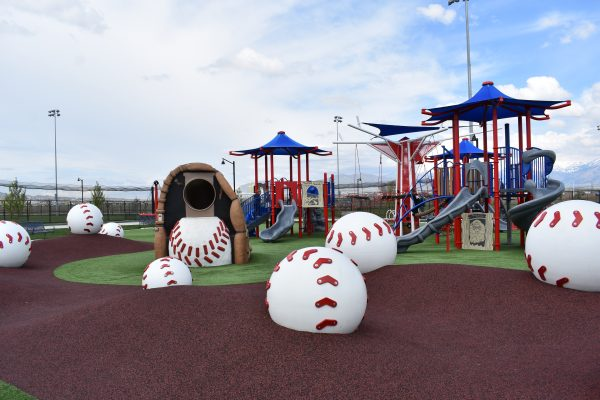

Featured Shaded Playgrounds
These are the most popular playgrounds that offer natural or built-in shade—perfect for keeping kids cool and safe from the sun while they play. Whether it's large trees, shade sails, or covered structures, these parks provide a comfortable play experience even on hot days.